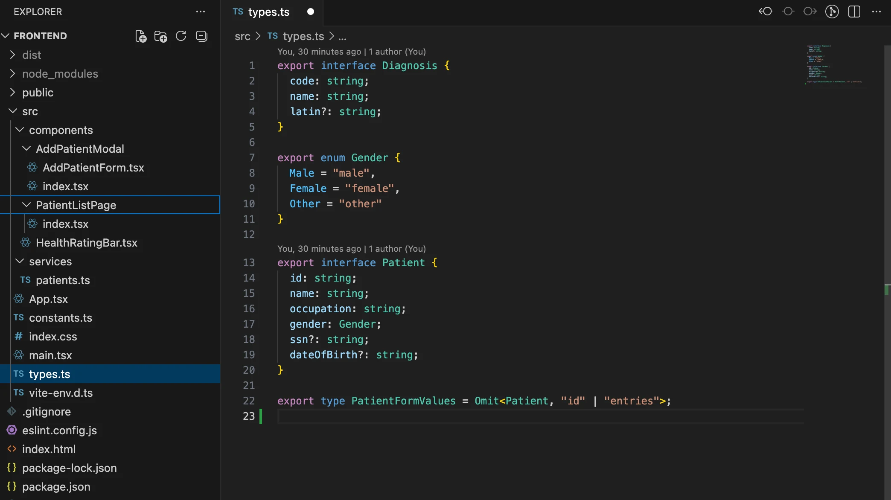
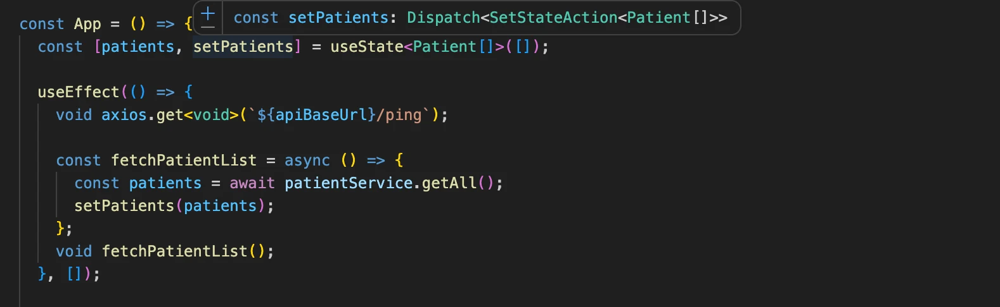

الختام الكبير: Patientor
العمل مع قاعدة شيفرة قائمة
عند الغوص في قاعدة شيفرة قائمة للمرة الأولى، من الجيد أن تحصل على نظرة شاملة على أعراف المشروع وبنيته. يمكنك أن تبدأ بحثك بقراءة README.md في جذر المستودع. يحتوي README عادةً على وصف موجز للتطبيق ومتطلبات استخدامه، وكذلك كيفية تشغيله للتطوير. وإذا لم يكن README متوفراً أو «وفّر» أحدهم وقته وتركه مجرد هيكل فارغ، يمكنك إلقاء نظرة على package.json. ومن الأفكار الجيدة دائماً أن تشغّل التطبيق وتتنقّل فيه للتأكد من أن بيئة التطوير لديك صالحة للعمل.
يمكنك أيضاً تصفّح بنية المجلدات للحصول على بعض الإلمام بوظائف التطبيق و/أو البنية المعمارية المستخدمة. ليست هذه الأمور واضحة دائماً، وقد يكون المطوّرون قد اختاروا طريقة لتنظيم الشيفرة غير مألوفة لك. المشروع النموذجي المستخدم في بقية هذا الجزء منظَّم حسب الميزات. يمكنك أن ترى ما الصفحات التي يضمها التطبيق، وبعض المكوّنات العامة، مثل النوافذ المنبثقة (modals) والحالة. ضع في اعتبارك أن الميزات قد تختلف في نطاقها. فالنوافذ المنبثقة، مثلاً، مكوّنات ظاهرة على مستوى واجهة المستخدم، أما الحالة فتقارب منطق العمل وتحافظ على تنظيم البيانات في الخفاء لتستخدمها بقية أجزاء التطبيق.
يوفّر TypeScript أنواعاً لما ينبغي توقّعه من بنى بيانات ودوال ومكوّنات وحالة. يمكنك أن تحاول البحث عن types.ts أو شيء مشابه للبدء. VSCode عون كبير، ومجرد تظليل المتغيرات والمعاملات قد يمنحك قدراً كبيراً من الفهم. يعتمد كل هذا بطبيعة الحال على كيفية استخدام الأنواع في المشروع.
إذا كان المشروع يضم اختبارات وحدة أو تكامل أو من الطرف إلى الطرف، فمن المرجح أن تكون قراءتها مفيدة. فحالات الاختبار هي أداتك الأهم عند إعادة هيكلة التطبيق أو إضافة ميزات جديدة إليه. أنت تريد أن تتأكد من عدم كسر أي ميزة قائمة أثناء العبث بالشيفرة. ويمكن أن يرشدك TypeScript أيضاً في أنواع المعاملات والقيم المُعادة عند تغيير الشيفرة.
تذكّر أن قراءة الشيفرة مهارة بحد ذاتها، فلا تقلق إن لم تفهم الشيفرة من القراءة الأولى. فقد تحتوي الشيفرة على حالات حافة كثيرة، وربما أُضيفت أجزاء من المنطق هنا وهناك طوال دورة تطويرها. من الصعب تخيّل نوع المشكلات التي صارعها المطوّر السابق. فكّر في الأمر كله مثل حلقات النمو في الأشجار. يتطلب فهم كل شيء التعمق في الشيفرة ومتطلبات مجال العمل. وكلما قرأت شيفرة أكثر، تحسّنت في فهمها. ومن المرجح أن تقرأ في حياتك شيفرة أكثر بكثير مما ستكتبه.
واجهة Patientor الأمامية
حان وقت العمل الجاد لإتمام الواجهة الأمامية للواجهة الخلفية التي بنيناها في التمارين 9-16. بل سنحتاج فعلاً إلى إضافة بعض الميزات الجديدة إلى الواجهة الخلفية لإنجاز التطبيق.
قبل الغوص في الشيفرة، لنشغّل كلاً من الواجهة الأمامية والواجهة الخلفية.
إذا سار كل شيء على ما يرام، ينبغي أن ترى صفحة لقائمة المرضى. تجلب هذه الصفحة قائمة المرضى من واجهتنا الخلفية، وتعرضها على الشاشة في جدول بسيط. وهناك أيضاً زر لإنشاء مرضى جدد في الواجهة الخلفية. ولأننا نستخدم بيانات وهمية بدلاً من قاعدة بيانات، لن تبقى البيانات محفوظة - فإغلاق الواجهة الخلفية سيحذف كل البيانات التي أضفناها. لم يكن تصميم واجهة المستخدم نقطة قوة لدى المنشئين، لذا لنتجاهل واجهة المستخدم في الوقت الحالي.
بعد التحقق من أن كل شيء يعمل، يمكننا البدء بدراسة الشيفرة. كل الأمور المثيرة موجودة في src. ومن باب التسهيل، يوجد بالفعل ملف types.ts للأنواع الأساسية المستخدمة في التطبيق، وسيتعين عليك توسيعه أو إعادة هيكلته في التمارين.
من حيث المبدأ، يمكننا استخدام الأنواع نفسها لكل من الواجهة الخلفية والواجهة الأمامية، لكن الواجهة الأمامية عادةً ما تكون لها بنى بيانات وحالات استخدام مختلفة للبيانات، ما يجعل الأنواع مختلفة. فمثلاً، للواجهة الأمامية حالة وقد ترغب في حفظ البيانات في كائنات أو خرائط بينما تستخدم الواجهة الخلفية مصفوفة. وقد لا تحتاج الواجهة الأمامية إلى كل حقول كائن البيانات المحفوظ في الواجهة الخلفية، وقد تحتاج إلى إضافة بعض الحقول الجديدة لاستخدامها في العرض.
تبدو بنية المجلدات كما يلي:

إلى جانب مكوّن App ومجلد للخدمات، هناك حالياً ثلاثة مكوّنات رئيسية: AddPatientModal و PatientListPage وكلاهما معرّف في مجلد، ومكوّن HealthRatingBar المعرّف في ملف. وإذا كان لمكوّن ما بعض المكوّنات الفرعية غير المستخدمة في مكان آخر في التطبيق، فقد تكون فكرة جيدة تعريف المكوّن ومكوّناته الفرعية في مجلد. فمثلاً، الآن يُعرَّف AddPatientModal في الملف components/AddPatientModal/index.tsx ومكوّنه الفرعي AddPatientForm في ملف خاص به ضمن المجلد نفسه.
لا شيء مفاجئاً كثيراً في الشيفرة. الحالة والتواصل مع الواجهة الخلفية مُنفَّذان بخطاف useState وAxios، على غرار تطبيق الملاحظات في القسم السابق. وتُستخدم Material UI لتنسيق التطبيق، وبنية التنقّل مُنفَّذة بـReact Router، وكلاهما مألوف لنا من الجزء 5 من المقرر.
من ناحية الأنواع، هناك أمران مثيران للاهتمام. يمرّر مكوّن App الدالة setPatients كـ prop إلى مكوّن PatientListPage:
const App = () => {
const [patients, setPatients] = useState<Patient[]>([]);
// ...
return (
<div className="App">
<Router>
<Container>
<Routes>
// ...
<Route path="/" element={
<PatientListPage
patients={patients}
setPatients={setPatients} // HIGHLIGHT LINE
/>}
/>
</Routes>
</Container>
</Router>
</div>
);
};
لإبقاء مترجم TypeScript راضياً، تُكتب الـ props بالأنواع كما يلي:
interface Props {
patients : Patient[]
setPatients: React.Dispatch<React.SetStateAction<Patient[]>>
}
const PatientListPage = ({ patients, setPatients } : Props ) => {
// ...
}
إذن نوع الدالة setPatients هو React.Dispatch<React.SetStateAction<Patient[]>>. يمكننا رؤية النوع في المحرر عند مرور المؤشر فوق الدالة:

يضم React TypeScript cheatsheet قائمة جميلة جداً بأنواع الـ props النموذجية، ويمكننا الاستعانة بها إذا لم يكن إيجاد الكتابة المناسبة للأنواع لـ props أمراً بديهياً.
يمرّر PatientListPage أربعة props إلى مكوّن AddPatientModal. اثنان من هذه الـ props دالتان. لنلقِ نظرة على كيفية كتابتهما بالأنواع:
const PatientListPage = ({ patients, setPatients } : Props ) => {
const [modalOpen, setModalOpen] = useState<boolean>(false);
const [error, setError] = useState<string>();
// ...
const closeModal = (): void => { // HIGHLIGHT LINE
setModalOpen(false);
setError(undefined);
};
const submitNewPatient = async (values: PatientFormValues) => { // HIGHLIGHT LINE
// ...
};
// ...
return (
<div className="App">
// ...
<AddPatientModal
modalOpen={modalOpen}
onSubmit={submitNewPatient} // HIGHLIGHT LINE
error={error}
onClose={closeModal} // HIGHLIGHT LINE
/>
</div>
);
};
تبدو الأنواع كما يلي:
interface Props {
modalOpen: boolean;
onClose: () => void;
onSubmit: (values: PatientFormValues) => Promise<void>;
error?: string;
}
const AddPatientModal = ({ modalOpen, onClose, onSubmit, error }: Props) => {
// ...
}
onClose مجرد دالة لا تأخذ أي معاملات ولا تعيد شيئاً، لذا فنوعها هو:
() => void
"نوع onSubmit أكثر إثارة للاهتمام قليلاً. فهو يأخذ معاملاً واحداً من النوع PatientFormValues، ولأنه دالة غير متزامنة، يعيد Promise. ولأن الدالة لا تعيد قيمة، فالنوع الكامل هو:
(values: PatientFormValues) => Promise<void>
23. Patientor، الخطوة 1
24. Patientor، الخطوة 2
المدخلات الكاملة
في التمرين 11، نفّذنا نقطة نهاية لجلب معلومات عن تشخيصات مختلفة، لكننا ما زلنا لا نستخدم تلك النقطة إطلاقاً. ولأن لدينا الآن صفحة لعرض معلومات المريض، سيكون من الجميل توسيع بياناتنا قليلاً. لنضف حقلاً من نوع Entry إلى بيانات المريض بحيث تحتوي بيانات المريض على مدخلاته الطبية، بما في ذلك التشخيصات المحتملة.
لنتخلّص من بيانات المرضى الأولية القديمة في الواجهة الخلفية ونبدأ باستخدام هذه الصيغة الموسّعة.
لننشئ الآن نوع Entry مناسباً استناداً إلى البيانات التي لدينا.
إذا أمعنّا النظر في البيانات، نرى أن المدخلات مختلفة تماماً عن بعضها. فلنلقِ نظرة، مثلاً، على المدخلين الأولين:
{
id: 'd811e46d-70b3-4d90-b090-4535c7cf8fb1',
date: '2015-01-02',
type: 'Hospital',
specialist: 'MD House',
diagnosisCodes: ['S62.5'],
description:
"Healing time appr. 2 weeks. patient doesn't remember how he got the injury.",
discharge: {
date: '2015-01-16',
criteria: 'Thumb has healed.',
}
}
...
{
id: 'fcd59fa6-c4b4-4fec-ac4d-df4fe1f85f62',
date: '2019-08-05',
type: 'OccupationalHealthcare',
specialist: 'MD House',
employerName: 'HyPD',
diagnosisCodes: ['Z57.1', 'Z74.3', 'M51.2'],
description:
'Patient mistakenly found himself in a nuclear plant waste site without protection gear. Very minor radiation poisoning. ',
sickLeave: {
startDate: '2019-08-05',
endDate: '2019-08-28'
}
}
نلاحظ فوراً أنه في حين أن الحقول الأولى متماثلة، يحتوي المدخل الأول على حقل discharge ويحتوي المدخل الثاني على الحقلين employerName وsickLeave. ويبدو أن لجميع المدخلات بعض الحقول المشتركة، لكن بعض الحقول خاصة بكل مدخل.
عند النظر إلى type، نرى أن هناك ثلاثة أنواع من المدخلات:
- OccupationalHealthcare
- Hospital
- HealthCheck
يشير هذا إلى أننا بحاجة إلى ثلاثة أنواع منفصلة. ولأنها جميعاً تشترك في بعض الحقول، قد نرغب ببساطة في إنشاء واجهة مدخل أساسية يمكننا توسيعها بالحقول المختلفة في كل نوع.
عند النظر إلى البيانات، يبدو أن الحقول id و description و date و specialist موجودة في كل مدخل. علاوة على ذلك، يبدو أن diagnosisCodes موجود فقط في مدخل واحد من نوع OccupationalHealthcare ومدخل واحد من نوع Hospital. ولأنه لا يُستخدم دائماً حتى في هذين النوعين من المدخلات، فمن الآمن افتراض أن الحقل اختياري. ويمكننا أن نفكر في إضافته إلى نوع HealthCheck أيضاً لأنه ربما لم يُستخدم فقط في هذه المدخلات تحديداً.
إذن سيكون BaseEntry الذي يمكن توسيع كل نوع منه كما يلي:
interface BaseEntry {
id: string;
description: string;
date: string;
specialist: string;
diagnosisCodes?: string[];
}
إذا أردنا ضبطه أكثر قليلاً، فبما أن لدينا بالفعل نوع Diagnosis معرّفاً في الواجهة الخلفية، قد نرغب ببساطة في الإشارة إلى حقل code من نوع Diagnosis مباشرةً في حال تغيّر نوعه يوماً ما. يمكننا فعل ذلك هكذا:
interface BaseEntry {
id: string;
description: string;
date: string;
specialist: string;
diagnosisCodes?: Diagnosis['code'][]; // HIGHLIGHT LINE
}
كما ذُكر سابقاً في هذا الجزء، يمكننا تعريف مصفوفة بالصيغة Array<Type> بدلاً من تعريفها Type[]. في هذه الحالة تحديداً، تبدأ كتابة Diagnosis['code'][] تبدو غريبة بعض الشيء، لذا سنقرر استخدام الصيغة البديلة (التي توصي بها أيضاً قاعدة ESlint المسماة array-simple):
interface BaseEntry {
id: string;
description: string;
date: string;
specialist: string;
diagnosisCodes?: Array<Diagnosis['code']>; // HIGHLIGHT LINE
}
الآن وقد عرّفنا BaseEntry، يمكننا البدء بإنشاء أنواع المدخلات الموسّعة التي سنستخدمها فعلاً. لنبدأ بإنشاء نوع HealthCheckEntry.
تحتوي المدخلات من نوع HealthCheck على الحقل HealthCheckRating، وهو عدد صحيح من 0 إلى 3، حيث يعني الصفر Healthy ويعني الثلاثة CriticalRisk. هذه حالة مثالية لـconst as object. وبهذه المواصفات، يمكننا كتابة تعريف نوع HealthCheckEntry كما يلي:
const HealthCheckRating = {
Healthy: 0,
LowRisk: 1,
HighRisk: 2,
CriticalRisk: 3,
} as const;
type HealthCheckRating = typeof HealthCheckRating[keyof typeof HealthCheckRating];
interface HealthCheckEntry extends BaseEntry {
type: "HealthCheck";
healthCheckRating: HealthCheckRating;
}
الآن نحتاج فقط إلى إنشاء نوعي OccupationalHealthcareEntry و HospitalEntry حتى نتمكن من دمجهما في اتحاد (union) وتصديرهما كنوع Entry هكذا:
export type Entry =
| HospitalEntry
| OccupationalHealthcareEntry
| HealthCheckEntry;
Omit مع الاتحادات
ثمة نقطة مهمة تتعلق بالاتحادات: عندما تستخدمها مع Omit لاستبعاد خاصية ما، فإنها تعمل بطريقة قد تكون غير متوقعة. لنفترض أننا نريد إزالة id من كل Entry. قد نفكر في استخدام
Omit<Entry, 'id'>
لكن ذلك لن يعمل كما قد نتوقع. في الواقع، سيحتوي النوع الناتج على الخصائص المشتركة فقط، وليس الخصائص غير المشتركة بينها. ومن الحلول البديلة الممكنة تعريف دالة خاصة شبيهة بـOmit للتعامل مع مثل هذه الحالات:
// تعريف Omit خاص للاتحادات
type UnionOmit<T, K extends string | number | symbol> = T extends unknown ? Omit<T, K> : never;
// تعريف Entry بدون خاصية 'id'
type EntryWithoutId = UnionOmit<Entry, 'id'>;
الآن أصبحنا مستعدين لوضع اللمسات الأخيرة على التطبيق!
25. Patientor، الخطوة 3
26. Patientor، الخطوة 4
27. Patientor، الخطوة 5
28. Patientor، الخطوة 6
29. Patientor، الخطوة 7
30. Patientor، الخطوة 8
31. Patientor، الخطوة 9
32. Patientor، الخطوة 10
33. Patientor، الفحص النهائي
34. مستودع GitHub الخاص بك